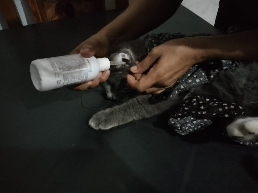
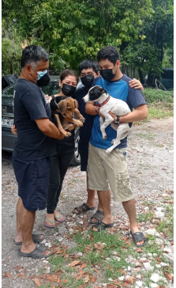

Erradicar el maltrato y abandono animal en nuestra comunidad, y promover una cultura de cuidado y responsabilidad hacia los animales. Creemos que juntos podemos hacer una diferencia y mejorar la vida de los animales en México.


Fundacom Bienestar Animal
Erradicar el maltrato y abandono animal en nuestra comunidad, y promover una cultura de cuidado y responsabilidad hacia los animales. Creemos que juntos podemos hacer una diferencia y mejorar la vida de los animales en México.